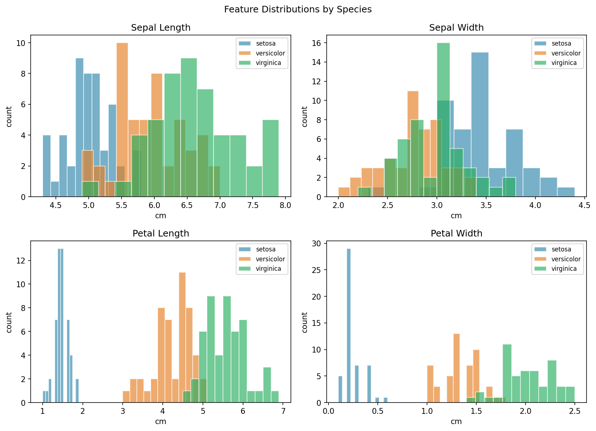
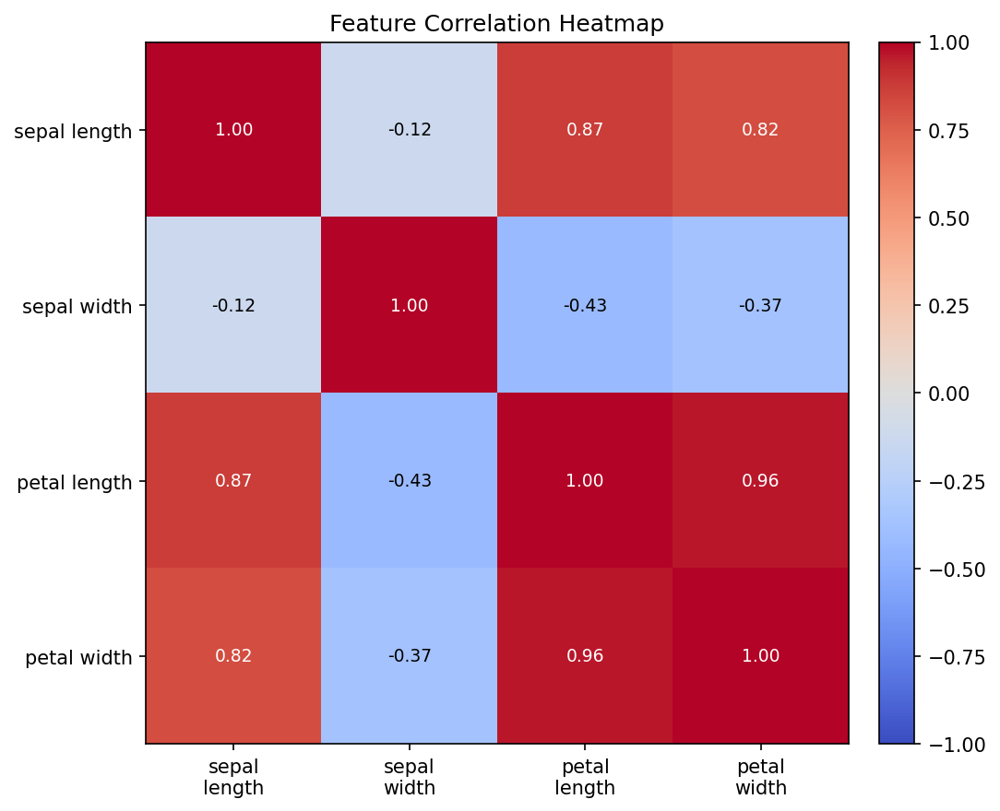
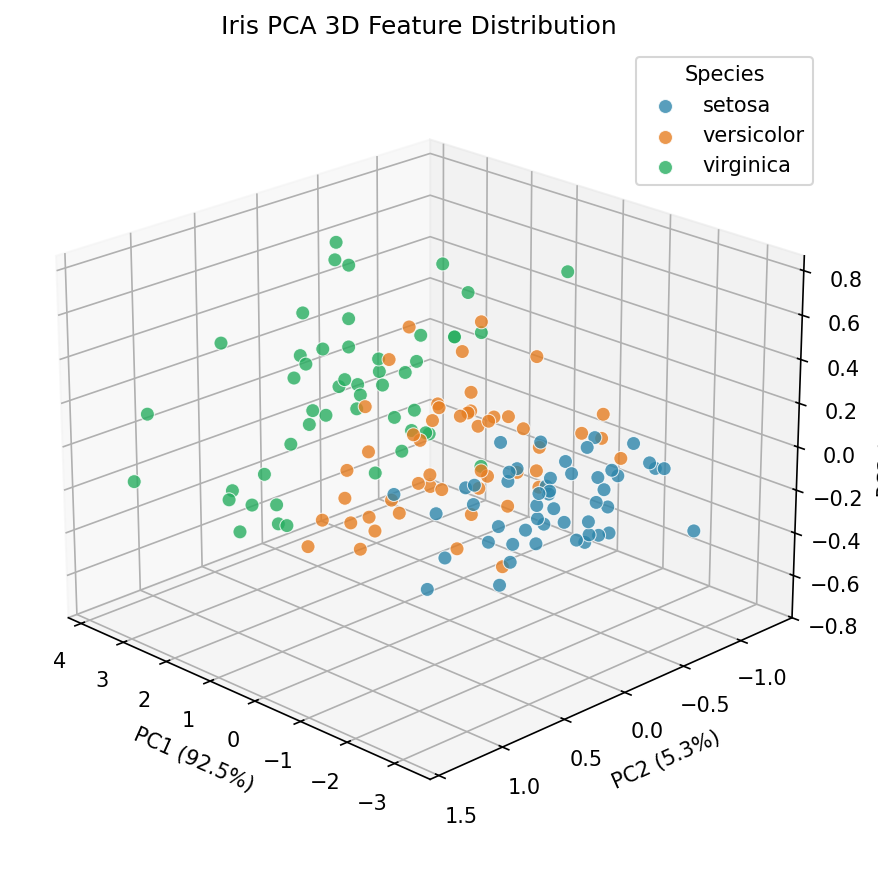
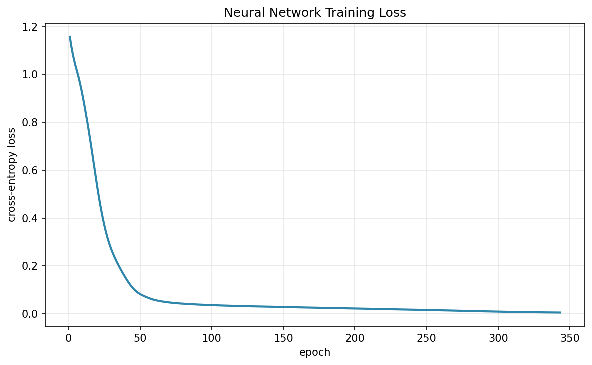
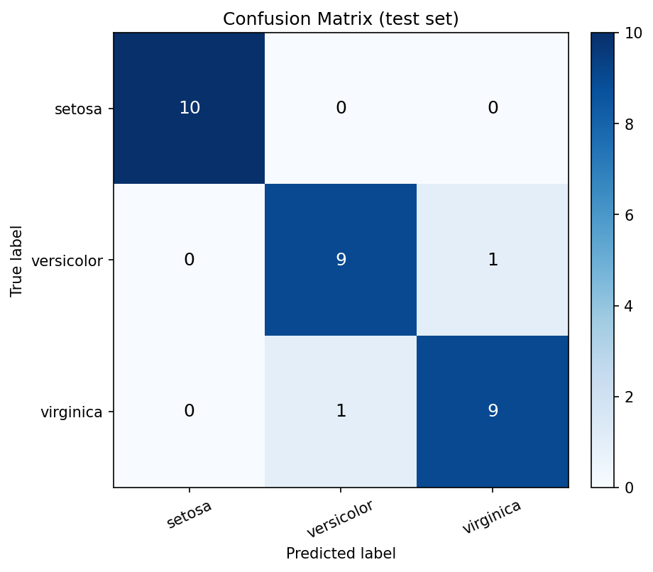
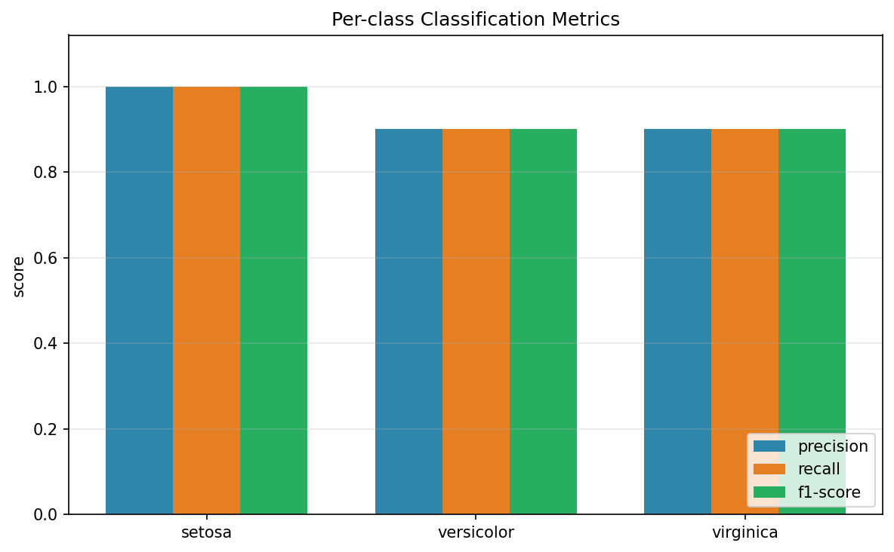

本研究以經典的 Iris（鳶尾花）資料集為對象，完成資料取得、保存、探索分析與分類建模。資料共 150 筆樣本、4 個數值特徵與 3 個類別（setosa、versicolor、virginica）。研究先以敘述統計、離群值偵測與相關性分析檢視資料品質，再以主成分分析（PCA）將四維特徵投影至三維空間進行視覺化；其中前三主成分累積解釋變異量達 99.48%。分類模型採用多層感知器（MLP）類神經網路，經標準化與分層切分後訓練，最終於測試集取得 accuracy = 0.9333、macro F1-score = 0.9333 的表現。結果顯示，Iris 在適當的前處理與網路設定下可被高效率地區分，適合作為機器學習教學與方法驗證的基準資料集。
Iris 資料集由統計學家 R. A. Fisher 於 1936 年整理發表，長年作為分類演算法與統計方法的基準資料。其特徵尺度一致、類別平衡且具備良好的可分性，非常適合用來驗證資料前處理、降維視覺化與類神經網路分類流程。本研究依循完整資料科學流程，從資料取得一路推進到模型評估與結果詮釋，並以測試導向開發（TDD）確保分析程式可重現、可驗證。
load_iris（原始資料源自 UCI Machine Learning Repository 的 Iris 資料集）。data/iris.csv 為由 scikit-learn 載入後轉存之副本，僅供教學與研究使用。| 欄位 | 型別 | 說明 | 單位 |
|---|---|---|---|
| sepal_length | float | 花萼長度 | cm |
| sepal_width | float | 花萼寬度 | cm |
| petal_length | float | 花瓣長度 | cm |
| petal_width | float | 花瓣寬度 | cm |
| species | string | 品種標籤（分類目標） | - |
| 樣本數 | 占比 | |
|---|---|---|
| setosa | 50 | 33.3% |
| versicolor | 50 | 33.3% |
| virginica | 50 | 33.3% |
三類別各 50 筆，屬完全平衡資料集，因此 accuracy 與 macro 平均指標皆具參考價值。
| 檢查項目 | 結果 |
|---|---|
| 樣本數 | 150 |
| 特徵數 | 4 |
| 類別數 | 3 |
| 缺值總數 | 0 |
| 重複列數 | 1 |
| 離群值列數（IQR 法則） | 4 |
資料沒有缺值；重複列為特徵值完全相同但可能屬於不同品種的觀測，保留以維持原始資料完整性。
| 特徵 | count | mean | std | min | 25% | 50% | 75% | max |
|---|---|---|---|---|---|---|---|---|
| sepal_length | 150.0000 | 5.8433 | 0.8281 | 4.3000 | 5.1000 | 5.8000 | 6.4000 | 7.9000 |
| sepal_width | 150.0000 | 3.0573 | 0.4359 | 2.0000 | 2.8000 | 3.0000 | 3.3000 | 4.4000 |
| petal_length | 150.0000 | 3.7580 | 1.7653 | 1.0000 | 1.6000 | 4.3500 | 5.1000 | 6.9000 |
| petal_width | 150.0000 | 1.1993 | 0.7622 | 0.1000 | 0.3000 | 1.3000 | 1.8000 | 2.5000 |
花瓣長度（petal_length）的平均值與變異程度明顯高於其他特徵，且花瓣相關特徵對品種的區分能力較強。
以各特徵的 1.5 倍四分位距（IQR）法則偵測，共有 4 筆樣本至少存在一個離群特徵值。由於 Iris 屬自然量測資料，且離群幅度有限，本研究保留這些樣本，避免過度清理造成資訊流失。
| 資料列索引 | outlier_count | is_outlier |
|---|---|---|
| 15 | 1 | True |
| 32 | 1 | True |
| 33 | 1 | True |
| 60 | 1 | True |

圖：各特徵依品種的分布

圖：特徵相關性熱圖
花瓣長度與花瓣寬度呈高度正相關，兩者亦與花萼長度有明顯關聯；花萼寬度與其他特徵的相關性較弱。這意味著資料存在可壓縮的共線性結構，適合以 PCA 降維。
PCA 將四個特徵線性組合為互相正交的主成分。前三主成分的解釋變異量比例分別為 92.46%、5.31%、1.71%，累積達 99.48%，因此三維投影足以呈現資料的主要結構。

圖：Iris 資料 PCA 三維特徵分布（依品種著色）
圖中 setosa 與其餘兩類明顯分離；versicolor 與 virginica 部分重疊，暗示這兩類的分類邊界較具挑戰性，也解釋了後續模型可能出現的少量混淆。
採分層抽樣（stratified split）將資料分為 120 筆訓練集與 30 筆測試集（test_size = 0.2，random_state = 42），確保各類別在兩個子集中比例一致。特徵標準化（StandardScaler）僅以訓練集估計參數，再套用至測試集，以避免資料洩漏。
| 資料集 | 樣本數 | setosa | versicolor | virginica |
|---|---|---|---|---|
| 訓練集 | 120 | 40 | 40 | 40 |
| 測試集 | 30 | 10 | 10 | 10 |
以 sklearn.decomposition.PCA 對四個原始特徵進行降維，保留三個主成分用於視覺化。PCA 僅用於探索與呈現，分類模型仍使用原始四維特徵，以避免降維造成的資訊損失。
模型採多層感知器（Multi-layer Perceptron），輸入層 4 個神經元、兩個隱藏層、輸出層 3 個神經元（對應三個品種），以 ReLU 為激活函數、Adam 為優化器，搭配交叉熵損失進行訓練。
| 項目 | 設定 | 值 |
|---|---|---|
| 0 | 隱藏層 | (16, 8) |
| 1 | 激活函數 | relu |
| 2 | 優化器 | adam |
| 3 | 學習率 | 0.010000 |
| 4 | L2 正則化 (alpha) | 0.000100 |
| 5 | 最大迭代次數 | 2000 |
| 6 | 實際迭代次數 | 343 |
| 7 | 隨機種子 | 42 |
以測試集計算 Accuracy、macro Precision、macro Recall、macro F1-score 與混淆矩陣。由於類別平衡，macro 平均能公平反映各類別的表現。
訓練損失由初始的 1.1575 下降至 0.0050，共迭代 343 次，收斂情形穩定。

圖：類神經網路訓練損失曲線
| 指標 | 數值 |
|---|---|
| Accuracy | 0.9333 |
| Precision (macro) | 0.9333 |
| Recall (macro) | 0.9333 |
| F1-score (macro) | 0.9333 |

圖：測試集混淆矩陣
混淆矩陣顯示 setosa 全數正確分類；錯誤主要發生在 versicolor 與 virginica 之間，與 PCA 三維分布中兩類重疊的觀察一致。
| 類別 | precision | recall | f1-score | support |
|---|---|---|---|---|
| setosa | 1.0000 | 1.0000 | 1.0000 | 10.0000 |
| versicolor | 0.9000 | 0.9000 | 0.9000 | 10.0000 |
| virginica | 0.9000 | 0.9000 | 0.9000 | 10.0000 |

圖：各類別 precision / recall / F1-score
本研究完成 Iris 資料集的取得、保存、探索分析、PCA 三維視覺化、MLP 分類模型訓練與評估，並將結果整理為本小論文。實驗結果顯示，經標準化與分層切分後，類神經網路在測試集可達到 93.33% 的準確率與 0.9333 的 macro F1-score。整體流程以測試導向開發實作，確保每一步驟皆可重現與驗證，可作為後續機器學習實驗的基礎範例。